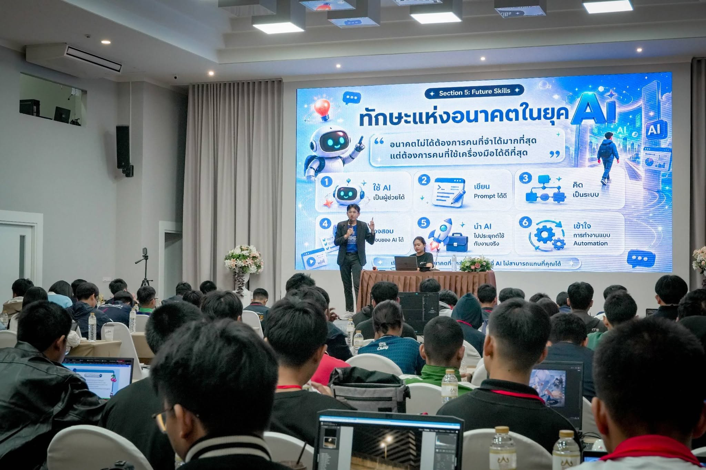
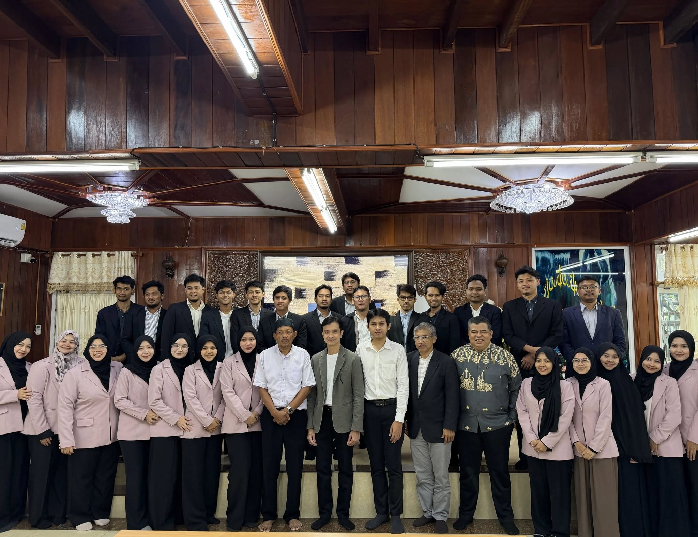
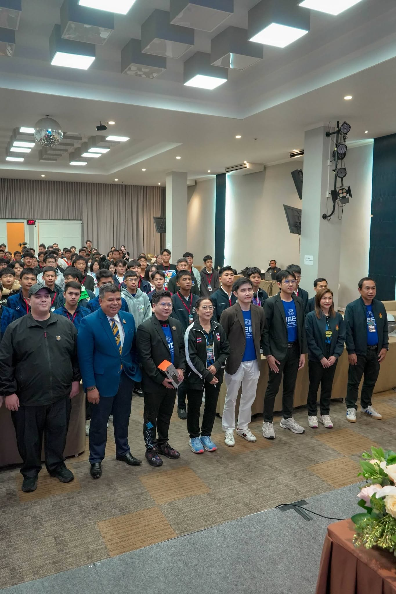
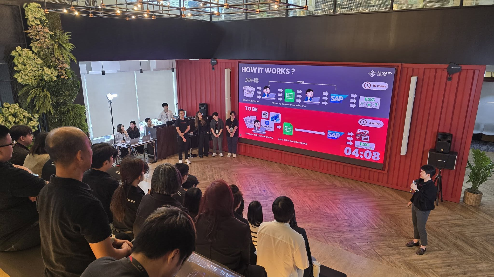
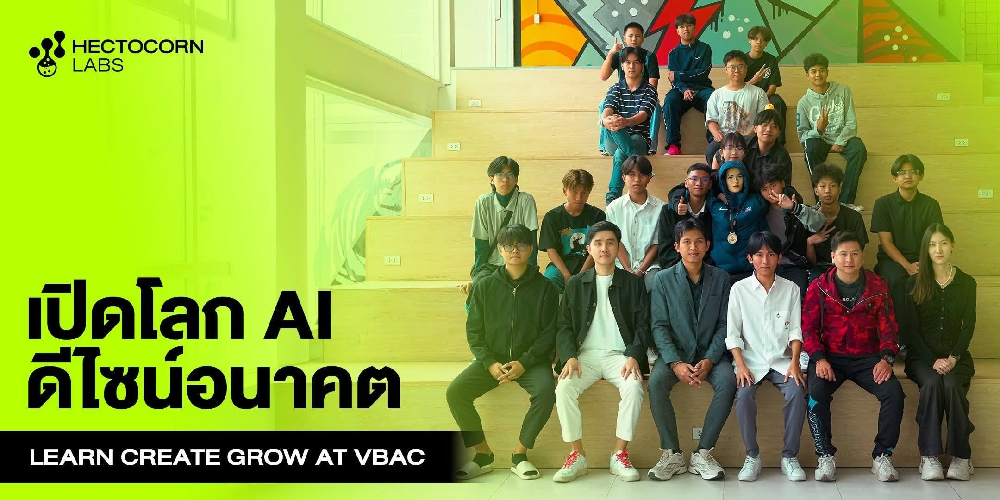

พื้นฐาน Generative AI
สำหรับผู้เริ่มต้นและทีมที่ต้องการเข้าใจ AI ก่อนนำไปใช้
เข้าใจความสามารถและข้อจำกัดของ AI · เลือกเครื่องมือให้ตรงงาน · ตรวจสอบคำตอบและดูแลข้อมูล
แนวทางลงมือทำ
กิจกรรม: ทดลองใช้ AI กับงานเขียน สรุป และค้นไอเดีย
LEARN AI THROUGH REAL WORK
AI TRAINING
& WORKSHOP
จากพื้นฐานสู่การประยุกต์ใช้
อบรมและเวิร์กช็อปสำหรับทีมและองค์กร
เชื่อมความรู้ AI กับบริบทการทำงานของผู้เรียน
ปรับหัวข้อและระดับความยากตามพื้นฐานผู้เรียน เป้าหมาย และเครื่องมือที่ทีมใช้งาน
 BANGKOK, THAILAND
BANGKOK, THAILANDปพัฒน์ชัย สิงหกุล Paphatchai Singhagul · AI Consultant
TRAINING TOPICS
หัวข้อด้านล่างเป็นแนวทางสำหรับออกแบบการอบรม โดยตกลงเนื้อหา เครื่องมือ และกิจกรรมก่อนจัดแต่ละครั้ง
สำหรับผู้เริ่มต้นและทีมที่ต้องการเข้าใจ AI ก่อนนำไปใช้
เข้าใจความสามารถและข้อจำกัดของ AI · เลือกเครื่องมือให้ตรงงาน · ตรวจสอบคำตอบและดูแลข้อมูล
กิจกรรม: ทดลองใช้ AI กับงานเขียน สรุป และค้นไอเดีย
สำหรับทีมที่ใช้งาน AI และอยากสื่อสารโจทย์ให้ชัดขึ้น
กำหนดบริบท เป้าหมาย และรูปแบบผลลัพธ์ · ปรับ Prompt จากคำตอบ · ตรวจคุณภาพก่อนนำไปใช้
กิจกรรม: ออกแบบชุด Prompt สำหรับงานของตนเอง
สำหรับงานเอกสาร การตลาด การสื่อสาร และการจัดการความรู้
สรุปเอกสาร · ร่างเนื้อหาและพรีเซนเทชัน · วิเคราะห์ข้อมูลเบื้องต้น · ตรวจความถูกต้องโดยคน
กิจกรรม: ทดลอง Workflow จากตัวอย่างงานของทีม
สำหรับทีมคอนเทนต์ การตลาด และผู้สนใจเครื่องมือสร้างสื่อ
พัฒนาแนวคิด · เขียนบรีฟ · ทดลองสร้างภาพและสื่อ · ตรวจสิทธิ์และความเหมาะสมก่อนเผยแพร่
กิจกรรม: สร้างต้นแบบสื่อจากโจทย์ที่กำหนด
สำหรับผู้เรียนที่มีพื้นฐานและต้องการต่อยอดเชิงเทคนิค
เข้าใจ Agent และ Workflow · เชื่อมเครื่องมือและ API · กำหนดสิทธิ์และจุดอนุมัติ · ประเมินผลลัพธ์
กิจกรรม: ออกแบบต้นแบบ Workflow โดยเลือกเครื่องมือตามพื้นฐาน
สำหรับหัวหน้าทีมและผู้ดูแลการนำ AI ไปใช้
เลือก Use Case · ประเมินความพร้อมข้อมูล · กำหนดแนวทางใช้งาน · วางแผนทดลองและวัดผล
กิจกรรม: ร่างแผนทดลองใช้ AI สำหรับทีม
LEARNING FORMAT
ระยะเวลา จำนวนผู้เรียน และรูปแบบออนไลน์หรือสถานที่จริง จะพิจารณาร่วมกันตามหัวข้อและความพร้อมของทีม
ปูพื้นฐานและแสดงตัวอย่างการใช้ AI พร้อมช่วงถามตอบ เหมาะกับการสร้างความเข้าใจร่วมกัน
เรียนรู้ผ่านกิจกรรมและตัวอย่างงาน ฝึกเขียน Prompt ทดลองเครื่องมือ และทบทวนผลลัพธ์ร่วมกัน
ออกแบบโจทย์ตามบทบาทงานและพื้นฐานผู้เรียน เพื่อให้เชื่อมกับงานที่ทีมทำอยู่
EXPERIENCE
จากการพัฒนาระบบองค์กร
สู่การสร้างผลิตภัณฑ์และบริการ AI
สวัสดีครับผมชื่อเจา มีประสบการณ์ด้านการออกแบบและพัฒนา AI Agent ที่เชื่อมกับข้อมูล เครื่องมือ และระบบขององค์กร ตั้งแต่ผู้ช่วยเฉพาะงาน ไปจนถึงระบบหลาย Agent ที่ประสานงานข้ามทีม พร้อมกำหนดสิทธิ์ การอนุมัติ และการติดตามผล
ปัจจุบันเป็น Founder & Chief Product Officer ที่ EOS Labs บริษัทที่พัฒนา EOS Creative Studio และ EOS Workspace และในปี 2026 ดำรงตำแหน่งประธานเจ้าหน้าที่ฝ่ายปฏิบัติการ ที่ Hectocornlabs พร้อมประสบการณ์ด้านการพัฒนาซอฟต์แวร์ สถาปัตยกรรมระบบ และการนำ AI ไปใช้ในองค์กร
SHARING KNOWLEDGE IN PRACTICE
ภาพจากกิจกรรมบรรยายและแบ่งปันความรู้ AI สะท้อนประสบการณ์การสื่อสารกับผู้เข้าร่วมหลากหลายกลุ่ม
ON STAGE / VIDEO HIGHLIGHT · 34 วินาที
บรรยายในงาน สพฐ. แบ่งปันแนวคิดการใช้ AI การเขียน Prompt และการนำเครื่องมือไปประยุกต์กับงานจริง ชมไฮไลต์ 34 วินาทีและภาพบรรยากาศจากงานเดียวกัน
กดเล่นเพื่อชมคลิป พร้อมเปิดเสียงหรือขยายเต็มจอได้


กิจกรรมกับสำนักงานคณะกรรมการอิสลามประจำจังหวัดสมุทรปราการ ครอบคลุมพื้นฐาน AI และการประยุกต์ใช้ในองค์กร

ภาพบรรยากาศร่วมกับผู้เข้าร่วมงาน จากอัลบั้มกิจกรรมบน Facebook

FRASERS PROPERTY / AI WORKFLOW
นำเสนอการใช้ AI อ่านข้อมูลจากเอกสาร invoice และเตรียมเปิด PO อัตโนมัติ ลดเวลาจาก 10 นาทีเหลือ 3 นาที

VBAC · โพสต์วันที่ 16 มิถุนายน
ร่วมแบ่งปันความรู้และแนวทางใช้ AI อย่างสร้างสรรค์ให้ผู้เรียนที่ VBAC พร้อมสร้างแรงบันดาลใจในการนำเทคโนโลยีไปต่อยอด โดย Hectocornlabs ร่วมเป็นส่วนหนึ่งของกิจกรรม
CONTINUOUS LEARNING
หลักสูตรด้าน AI, Prompt Engineering และการพัฒนาระบบ จาก Google, Microsoft และสถาบันการศึกษา
 Google AI Essentials Specialization ↗
Google AI Essentials Specialization ↗
 Generative AI และการใช้งาน ChatGPT เพื่อการศึกษาค้นคว้า ↗
Generative AI และการใช้งาน ChatGPT เพื่อการศึกษาค้นคว้า ↗
 Introduction to Artificial Intelligence in the Workplace ↗
Introduction to Artificial Intelligence in the Workplace ↗
 Artificial Intelligence in Content Marketing ↗
Artificial Intelligence in Content Marketing ↗
 เขียนโค้ดคู่กับ AI เสร็จไว + ไม่ตกเทรนด์ ↗
เขียนโค้ดคู่กับ AI เสร็จไว + ไม่ตกเทรนด์ ↗
 Basic Prompt Engineering ↗
Basic Prompt Engineering ↗
 Fundamentals of Machine Learning ↗
Fundamentals of Machine Learning ↗
 Fundamental AI Concepts ↗
Fundamental AI Concepts ↗
 Fundamentals of AI Agents on Azure ↗
Fundamentals of AI Agents on Azure ↗
 Build a RAG-based Copilot with Azure AI Studio ↗
Build a RAG-based Copilot with Azure AI Studio ↗
 Azure AI: Document Intelligence & Knowledge Mining ↗
Azure AI: Document Intelligence & Knowledge Mining ↗
 Fundamentals of Computer Vision ↗
Fundamentals of Computer Vision ↗PLAN YOUR AI TRAINING
แจ้งหัวข้อที่สนใจ กลุ่มผู้เรียน จำนวนคน พื้นฐาน และช่วงเวลาที่ต้องการ เพื่อร่วมกำหนดเนื้อหา รูปแบบกิจกรรม เครื่องมือ และรายละเอียดการจัดอบรม
Founder & Chief Product Officer, EOS Labs
เพิ่มเพื่อน LINE ติดต่อทาง Facebook โทร 0632387049